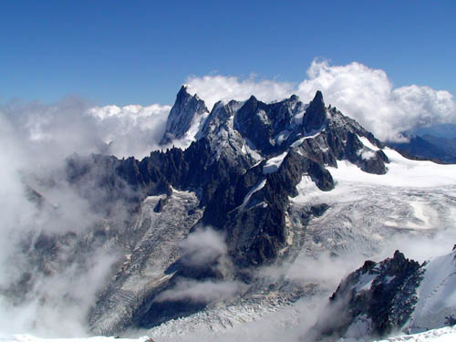
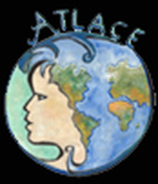

Passer un moment, une journée ou une semaine avec un passionné
Avec un artiste, un scientifique, une personnalité ou tout simplement quelqu'un qui souhaite partager son talent ou sa passion : ATLACE vous propose des événements culturels, des voyages extraordinaires et des sorties ludiques.
Dormir dans un tipi ou dans un château, aller au théâtre, danser, participer à une fête en costume d'époque, créer votre œuvre en un week-end, vous promener avec un âne… Parce que le merveilleux, l'insolite, l'exceptionnel embellit la vie.
Association à but non lucratif, déclarée à la préfecture de Paris sous le n° 94.3833.

Que veut dire ATLACE ?
« Association Tous Loisirs, les Ambassades Culturelles et les Expéditions ». Un nom qui dit tout : des loisirs pour tous, des rencontres culturelles et, chaque année, une grande expédition.
Le logo — un globe au visage humain — a été réalisé par notre artiste peintre Gisèle Vergnaud.

De Noël 1994 à aujourd'hui
- 1994
Création d'ATLACE, à Noël. - 1995
Safari au Kenya pour la grande migration des gnous, et lac Victoria. - 1996
Premier voyage volcanique aux Canaries avec le volcanologue Jacques-Marie Bardintzeff : le début d'une longue collaboration. - 1997 – 2003
Aurores boréales en chiens de traineaux, animaux d'Afrique, volcans de La Réunion, Nouvelle-Zélande, Tibet, Ouest américain, expéditions polaires, Açores. - 2004 – 2019
Écosse et Irlande, Japon, Inde, Madère, Hawaï, Ardèche, Norvège et le Cap Nord… - 2020 – 2022
Week-ends à la campagne, thalasso à Roscoff et expédition à Malte, malgré une période compliquée. - 2024
ATLACE fête ses 30 ans : croisière de charme en Égypte et week-end thématique à Beauval. - 2027
Grand voyage d'exception en Italie : 30 ans de collaboration avec Jacques-Marie Bardintzeff.
Ce qui nous réunit
Convivialité
La diversité dans la convivialité : s'enrichir et se divertir ensemble.
Curiosité
Une culture « azimut » : sciences, arts, nature, patrimoine, métiers d'art.
Partage
Des scientifiques, des artistes et des passionnés qui partagent leur savoir.
Accessibilité
Du junior au senior : pas de difficulté physique ni de connaissances requises.
Les visages d'ATLACE
Ils nous accompagnent
Envie de nous rejoindre ?
Adhérez à ATLACE, venez essayer une activité ou proposez votre aide : on vous répond avec plaisir.